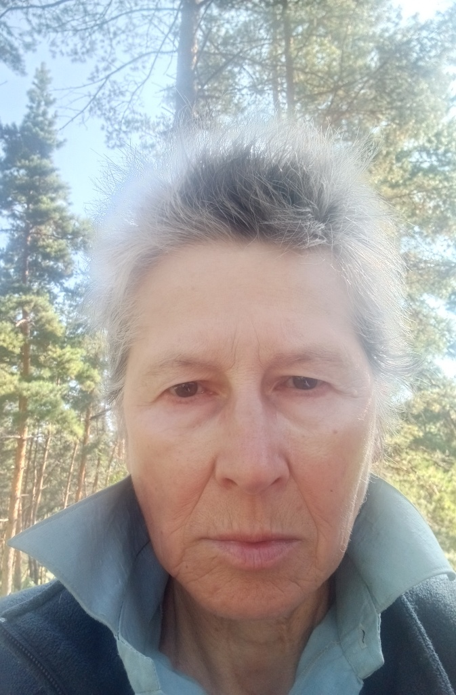
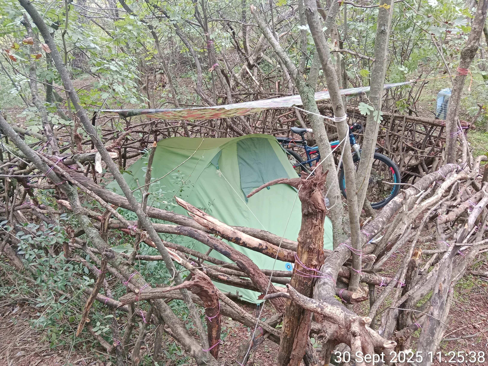
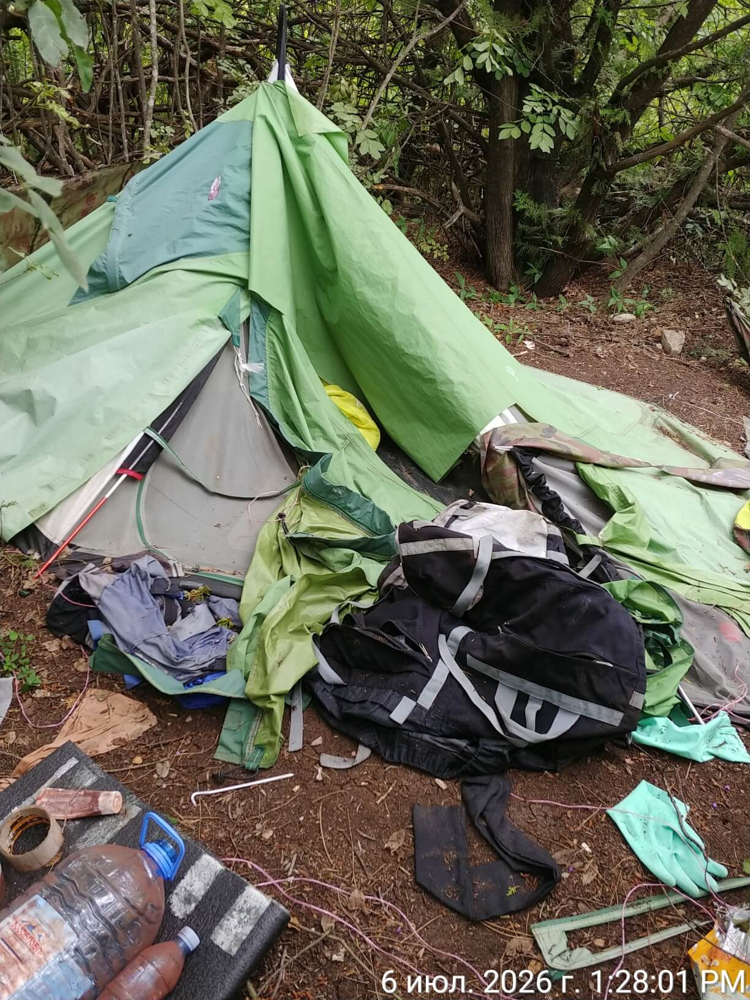
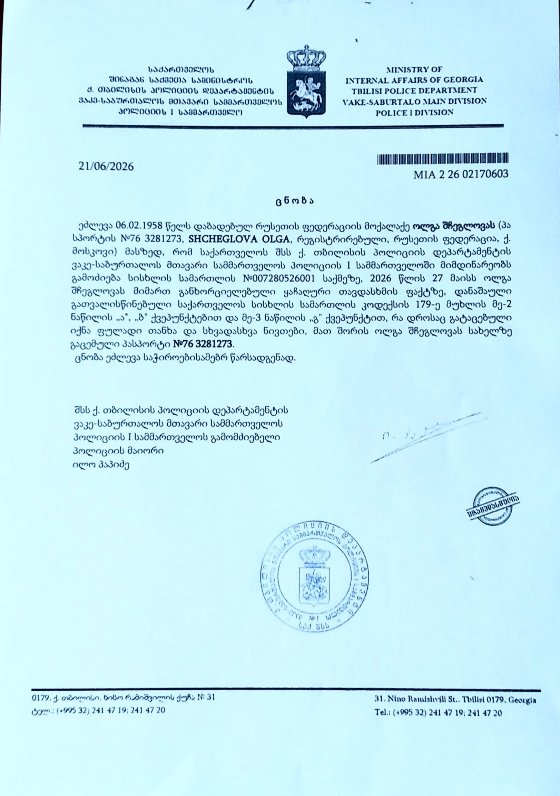
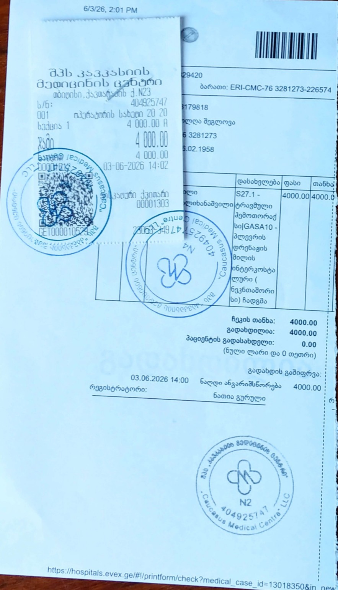

У цьому наметі була створена Енциклопедія православного воєнного путінізму.
У цьому наметі була створена Енциклопедія православного воєнного путінізму.
24.04.2024, у віці 66 років, я була змушена тікати з Росії, рятуючись від переслідувань з боку російських спецслужб, метою яких було моє фізичне знищення.
Але переслідування продовжилося і за кордоном — у Туреччині та Грузії, де перебуває величезна кількість агентів російських спецслужб.
29.09.2024 я звернулася за притулком у Швейцарії, надавши докази неможливості мого повернення до Росії.
Однак розгляд моєї справи в Секретаріаті з міграції (SEM) Швейцарії супроводжувався грубими процесуальними порушеннями: мені не надали адекватного перекладу Протоколу інтерв'ю, мої відповіді були спотворені перекладачем, мої ключові докази не були взяті SEM до уваги, в основу Рішення були покладені вигадані обставини та неправдиві «факти»; призначене мені медичне обстеження було скасовано без пояснення причин. У результаті я отримала необґрунтовану відмову у притулку і була депортована до Грузії, де знову опинилася в умовах переслідування, цього разу — на тлі гуманітарної катастрофи.
Два роки я, 68-річна самотня жінка, жила в наметі на вулиці, без доступу до базових умов людського життя:
• Холод і спека: Взимку температура в наметі опускається нижче нуля градусів за Цельсієм. Влітку — піднімається до 50°C.
• Відсутність медицини та гігієни: Неможливість отримати медичну допомогу чи будь-яке лікування (немає умов для зберігання ліків). Неможливість помитися та попрати речі.
• Мінімум ресурсів: Харчування — сухий пайок і холодна вода. Відсутність електрики, опалення, кондиціонера, холодильника. Відсутність газу, зимового спорядження, теплого одягу та взуття.
Моя ситуація — це не лише відсутність житла, медицини та гігієни. Російські спецслужби здійснюють щодо мене постійне та систематичне транскордонне переслідування:
• Розпалювання загальної ненависті та ворожнечі з боку місцевого населення, що ґрунтується на наклепах, інсинуаціях та повністю сфабрикованих "доказах".
• Спроби вбивства, замасковані під нещасний випадок (зокрема шляхом виведення з ладу гальм на моєму велосипеді).
• Отруєння, зокрема радіоактивною речовиною
• Завдання шкоди здоров'ю, зокрема систематичні атаки на очі.
• Залякування, погрози, фізичне насильство.
• Цілеспрямована кампанія із систематичного позбавлення сну (за допомогою системи електронних пристроїв навколо моєї стоянки, запрограмованих на відтворення оглушливо гучних звуків).
• Псування майна (намет, надувний матрац, велосипед).
• Саботаж у сфері послуг (продаж неякісних та шкідливих товарів).
• Безпрецедентний цифровий терор: злам мого смартфона та постійні хакерські атаки, що перешкоджають моїй творчій діяльності (блокування та саботаж роботи застосунків і програм, зокрема штучного інтелекту, знищення та підміна даних, створення постійних технічних труднощів).
• Жахливим актом тиску з боку російських спецслужб стало вбивство моєї матері в Росії 20 жовтня 2025 року.
Уся ця система транскордонного переслідування має одну мету — вбити або зламати мою волю: змусити мене замовкнути, або повернутися до Росії, або вкоротити собі віку. І саме тому я не мовчу, а продовжую жити й творити попри все: технічні труднощі, умови життя, що прирівнюються до катувань, психологічний тиск, ворожість місцевого населення та відсутність доступу до медицини.
Моя творчість як письменника, сатирика та художника, що викриває війну та путінський режим, систематично блокується на всіх основних російськомовних і деяких міжнародних платформах (9 соціальних мереж та 2 літературні портали). Тотальна цензура — це найкращий доказ ідейної цінності, значущості та актуальності мого слова.
Цей проєкт — моя відповідь тим, хто намагається мене знищити. В умовах, що межують із нелюдським поводженням, я створюю тексти, щоб із їхньою допомогою:
• Викривати нескінченний потік політичного божевілля, свавілля, брехні, цинізму та жорстокості.
• Привертати увагу світової спільноти до потреб тих, хто страждає від війни та авторитарних режимів.
• Конвертувати цю увагу в реальну допомогу, стимулюючи читачів робити прямі донати у перевірені фонди підтримки України.
Кожна мініатюра, п’єса чи стаття, які ви читаєте, написані ціною неймовірних зусиль: спартанське життя в наметі, в умовах нестерпної спеки, холоду, голоду, постійного переслідування, відчаю та безнадії.
Це не просто текст. Це — свідчення мужності, незламної волі та активного опору. І водночас — інструмент для допомоги таким самим, як я: постраждалим, знедоленим і тим, хто перебуває у розпачі.
27 травня 2026 року було здійснено спробу мого фізичного усунення. Два кремезних чоловіка вночі перелізли через огорожу, розгромили мій наметовий табір на пагорбах Ваке, цілу годину мене жорстоко били, катували, мучили, калічили. Зламали щонайменше п'ять ребер, пробили легеню. Пневмоторакс, гемоторакс, п'ятдесят ударів по голові, розрив барабанної перетинки, множинні забиття та гематоми.
Бандити відібрали у мене всі гроші, два телефони, зарядні пристрої, пауербанки, навіть трійник для розетки — словом, усі мої робочі інструменти, а крім того — 7 карт пам'яті з архівами та закордонний паспорт. Щодо паспорта лицемірно запропонували вранці з'явитися до російського консульства.
І залишили помирати на вершині пагорба. Навмисно позбавивши мене будь-якої можливості дістатися лікарні або викликати службу порятунку. Спуск із гори крутий і кам'янистий, уночі без ліхтаря спускатися з пневмотораксом, коли ти не можеш дихати, коли око запливло, окуляри втрачені і ти нічого не бачиш, коли коліна тремтять від пережитого жаху та нестерпного болю, а через стрес не працює голова...
Вони саме на це й розраховували — що у мене не вистачить сил і мужності, що я спіткнуся і зламаю шию, впаду з урвища, задихнуся і знепритомнію.
Але я спустилася. З останніх сил сповзла вниз, до парку Ваке, де, на щастя, одразу зустріла людей, які викликали поліцію та швидку.

Місце злочину: намет порізаний ножем, каркас зламаний, речі розкидані по землі.

Офіційна довідка з поліції, що підтверджує факт нападу, заподіяння шкоди здоров’ю та пограбування. Зазначено номер кримінальної справи: 007280526001.

Основний платіжний документ (їх кілька) про оплату мого лікування в Кавказькому медичному центрі в Тбілісі.
Якщо Вам сподобалася книга, підтримайте автора в міру своїх можливостей.
Бандити відібрали у мене всі заощадження, за лікування довелося заплатити понад 4000 ларі (гроші взяті в борг), потрібна тривала реабілітація, нормальне житло, харчування та медикаменти.
МІЙ ГАМАНЕЦЬ:
0x55D4819973eC8573dD2E4f709E366363804E1F18
Мережа: Polygon
Валюта:
USDT (Polygon)
USDC (Polygon)
MATIC / POL
Будь-яка сума вітається. Дякую.